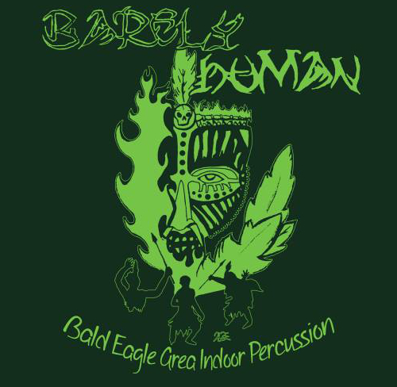

LINK
Beat Blocks
MIT Toy Product Design
The concept was simple: blocks that play music. The purpose was clear: create a new, inviting way for children to interact with music, allowing the introduction to musical composition at a young age, building on children’s natural creative confidence.
Each block represents one musical “chunk”, like a short drumbeat, or bass guitar riff. When you connect the magnetic blocks to the base with speakers, they play their music in order away from the base, which is visualized by lights within the blocks. The color of the blocks represents the type of musical element: blue is bass, pink is drums, and green is "melody". The blocks are fully functional and can be placed in any orientation, allowing endless song combinations.
Technical Aspects
The cubes were all 3D printed, and each sports an Aduino microcontroller and RGB LED. The magnets provided electrical connections between the cubes, but we ran into contact issues. To combat this, we replaced some of the magnets with machine screws that were slightly loose, so they were floating in the frame, and could shift to make connection with the magnets.
Inside the base, a raspberry pi serves as the brain. It sends out a sequence of coordinates, which is passed along by each cube. When a cube receives the coordinates, it subtracts one from either the x or y coordinate depending on the side it received the coordinates from, and passes it on. If a block received (0,0), it knew it was for itself, and sent back an ID to the base, which placed it in a “map” of the cube structure. You can actually see this process happening in the video if you look closely. The blocks begin lit up, but then turn off when each ID is sent back to the base right after the play button is hit.
My Roles
- Cube/electrical connection design
- Hardware assembly
- Music compostition
- Map creation algorithim
- Audio Processing
- Testing at the Boston Children's Museum
LINK
Glass Marimba
This three octave glass marimba was designed to be inexpensive, durable, and compact: perfect for the student percussionist. Choosing glass gives the marimba a unique sound that has superior tonal aesthetics compared to most student models. Every decision I made was based on producing the highest quality sound and keeping the price down, retailing for 1/3 of the competitors’ prices.
There are only a few glass marimbas in existence, so the entire product had to be designed nearly from scratch. The frame has the minimal number of unique materials to keep the cost down, and was designed to be supported by a variety of electric keyboard stands, but can also function on a table or bed, giving maximum flexibility for the student practicing at home. Metallic black was chosen as the color for the frame, to emphasize the shine of the glass and blend with most keyboard stands.
LINK
Barely Human
BEA Indoor Drumline 2015

As captain of the Bald Eagle Area Drumline, I was able to participate in the design of our production. In this design process, we first picked a setting and music. The story was of a girl stranded on an island, attracted to the sounds of the drums in the woods. She discovers a tribe of savages, and realizes her only chance at survival is to join them.
We selected music and themes from a few film scores that we would adapt to fit our show. One of my main roles was to compose the drum parts, taking into consideration the theme, story, and balance between musicality and showmanship. Due to copyright reasons I cannot publicly post the compositions.
